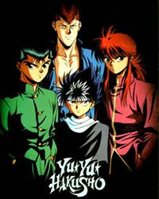

Yu Yu Hakusho
The story follows Yusuke Urameshi, a 14 year old delinquent, who dies while saving a child from getting hit by a car. Unprepared for Yusuke preforming such act, the afterlife has nowhere to send him. As a result, the interm ruler, Koenma, employs him to destroy havoc wreaking demons and retrieve important items. During this time, Yusuke is joined by his arch rival, Kazuma Kuwabara, and two ex-convict demons, Hiei and Kurama. Together, they battle others for the fate of humanity.